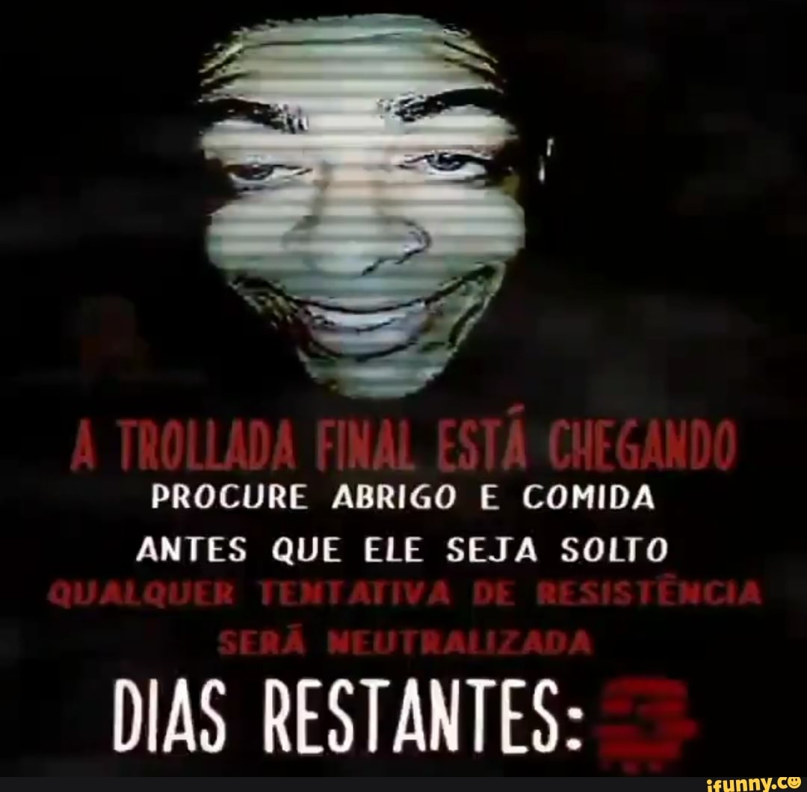
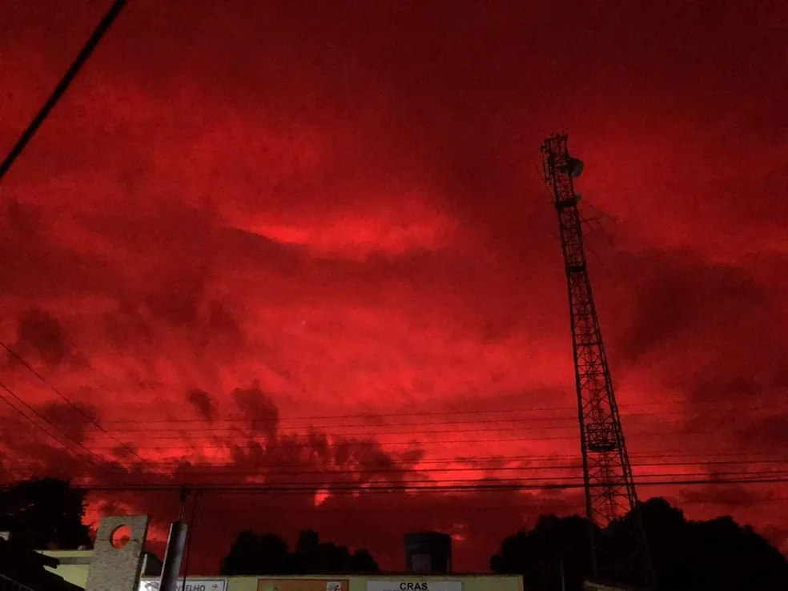
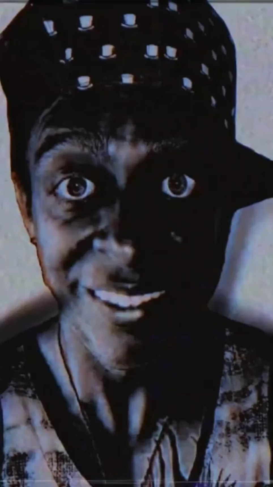

Tudo começou como uma piada interna sobre uma lenda fictícia sobre um Youtuber que adorava assistir, cujo era conhecido como "Everson Zoio".
O começo da piada foi divertida, pois como Everson estava a dois anos sem postar conteúdo, eu e meus amigos nos divertimos revivendo as boas memórias com uma piada dizendo que Everson estava se preparando para a "Trollada Final" que seria a pegadinha das pegadinhas, a pegadinha para acabar com qualquer outra... até que...
O Aviso
Essa coisa começou a ser noticiada em todos os canais na TV aberta, como se fosse um aviso de ataque nuclear ou esse tipo de coisa, mas isso não seria tão perigoso quanto... certo..?
Com o passar dos dias...
O tal dia previsto havia chegado e nada aconteceu... até o final da tarde...
O céu subitamente escureceu e foi iluminado por uma luz carmesim enquantos os barulhos da sirene eram ensurdecerdores mas logo começaram a tocar a música tema dos "Desafios do Zoio" e então vimos várias pessoas se tornando cópias deformadas de Everson Zoio, se gravando enquanto faziam vários dos "desafios hardcore", tirei uma foto de uma das criaturas após sair de um mergulho no rio tietê.
